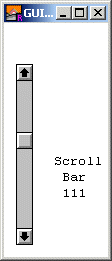

GUI.CreateVerticalScrollBar (x, y, size : int, min, max, start : int, actionProc : procedure x (value : int)) : intGUI.CreateVerticalScrollBarFull (x, y, size : int, min, max, start : int, actionProc : procedure x (value : int), arrowInc, pageInc, thumbSize : int) : int
Creates a vertical (up-down) scroll bar and returns the scroll bar's widget ID.
A scroll bar is a widget that allows users to see a piece of a document that cannot be displayed on the screen in its entirety. The picture below shows a vertical scroll bar. To control a scroll bar, there are a few choices: the user can click on the thumb (the box in the scroll bar) and slide it up and down, or the user can click in the scroll bar itself above or below the thumb (in which case the thumb is moved up or down one "page"), or the user can click on the up or down arrows at the ends of the scroll bar (in which case the thumb is moved up or down one "arrow increment" or "line").

A Vertical Scroll Bar
The programmer defines a page or an arrow increment. When the value of the scroll bar changes, the action procedure of the scroll bar is called with the new value as a parameter. The action procedure should then redraw the contents using the new value of the scroll bar.
The range of values that the scroll bar will give is determined by the min and max parameters in the Create call. The left side of the scroll bar represents the minimum value, while the right represents the maximum value. There is also the "thumb size". This represents the range of values that can be seen at once on the screen.
By default, the arrow increment (the amount the value is changed when the scrolling arrows are pressed) is set to one. The page increment (the amount the value is changed when the user clicks in the bar to the right or left of the thumb) is set to one quarter the difference between the minimum and the maximum. The "thumb size" is set to zero (see the description of scroll bars for an explanation of the thumb size).
The x and y parameters specify the lower-left corner of the scroll bar. The size parameter specifies the length of the scroll bar (including the arrows) in pixels. The min and max parameters are the minimum and maximum valies returned by the scroll bar. The start parameter is the initial value of the scroll bar and should be between min and max inclusive. The actionProc parameter is the name of a procedure that is called when the value of the scroll bar is changed. The parameter to the action procedure is the current value of the scroll bar.
The following program creates a vertical scroll bar. Whenever the scroll bar's value is changed, a message is displayed in the window.
import GUI
View.Set ("graphics:125;200,nobuttonbar")
var scrollBar : int
procedure ScrollBarMoved (value : int)
Text.Locate (9, 7)
put "Scroll"
Text.Locate (10, 8)
put "Bar"
Text.Locate (11, 8)
put value : 3
end ScrollBarMoved
scrollBar := GUI.CreateVerticalScrollBar (10, 10, 180,
50, 150, 50, ScrollBarMoved)
loop
exit when GUI.ProcessEvent
end loop
For GUI.CreateVerticalScrollBarFull, the arrowInc parameter specifies the arrow increment (the amount the scroll bar's value is changed when the scroll arrows are pressed). The pageInc specifies the page increment (the amount the scroll bar's value is changed when the user clicks in the page left/right section of the scroll bar). The thumbSize parameter specifies the "thumb size". See the scroll bar explanation for more detail on a scroll bar's "thumb size".
For example, if you have a window that can display 20 lines of text at once and there are 100 lines of text, you would set min to 1, max to 100 and thumbSize to 20. The value returned by the scroll bar would then be the line number of the first line on the screen to be displayed. When the scroll bar was at its maximum value, it would return 81, since by doing so, lines 81-100 would be displayed.
For an example program that scrolls a large picture over a smaller window, see GUI.CreateHorizontalScrollBar.
In some instances, you will want the the minimum and maximum values of the scroll bar to be reversed (right/top is minimum). In that case, call the GUI.SetSliderReverse procedure to flip the values of the scroll bar.
Scroll bars always have a fixed height (for horizontal scroll bars) or width (for vertical scroll bars). To get the scroll bar's width, use the GUI.GetScrollBarWidth function.
When GUI.CreateVerticalScrollBar or GUI.CreateVerticalScrollBarFull is called, the newly created scroll bar will be displayed immediately unless GUI.DisplayWhenCreated has been called with the display parameter set to false.
When a scroll bar is not enabled, the gray in the bar is set to white and the thumb is not displayed. The scroll bar no longer responds to any mouse clicks until the scroll bar is enabled again.
The following GUI subprograms can be called with a scroll bar as the widgetID parameter:
GUI.Show, GUI.Hide, GUI.Enable,GUI.Disable, GUI.Dispose, GUI.GetX,GUI.GetY, GUI.GetWidth, GUI.GetHeight,GUI.SetPosition, GUI.SetSize, GUI.SetPositionAndSize, GUI.GetSliderValue,GUI.SetSliderValue, GUI.SetSliderMinMax,GUI.SetSliderSize, GUI.SetSliderReverse,GUI.SetScrollAmount
Exported qualified.
This means that you can only call the function by calling GUI.CreateVerticalScrollBar, not by calling CreateVerticalScrollBar.
GUI.GetSliderValue and GUI.SetSliderValue for reading and setting the value of a scroll bar, GUI.SetSliderMinMax for changing the minimum and maximum values of a scroll bar, and GUI.SetScrollAmount for changing the scrolling increments and thumb size of a scroll bar. See also GUI.SetSliderSizefor setting the length of a scroll bar and GUI.SetSliderReverse for reversing the sense of a scroll bar.